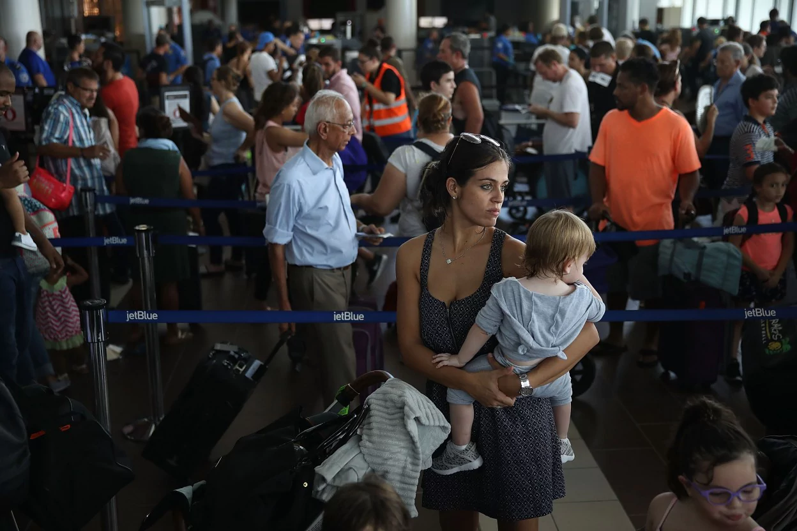

September 27, 2017
Democracy Dies in Darkness

Edition: US & World | Regional
- In the News
- Zuckerberg Trump
- Jared Kushner
- Puerto Rico
- Yosemite rockfall
- Hillary Clinton
- Killer clown
- Doomsday
- Southwest
- Paul Horner
- Giant rat
- Harvey death
- Jemele Hill
Alabama defeat weakens and isolates Trump as his problems grow
President Trump’s political vitality within his party now stands in question, as his vocal campaigning in Alabama for Luther Strange came to naught, his legislative agenda lies in tatters and his response to Hurricane Maria’s destruction has come under siege from members of both parties.
By Robert Costa • 27 minutes ago- Ala. Republicans out-Trumped Trump
- The Take: GOP struggles to reconcile its internal contradictions
GOP pitches deep tax cuts, with few details on paying for them
Republicans proposed slashing tax rates for the wealthy, middle class and businesses, while keeping popular tax deductions that encourage home buying and charitable giving, according to a document obtained by The Post.
By Damian Paletta, Mike DeBonis and Carolyn Y. Johnson
- The Debrief: Trump stays unusually subdued in Indiana pitch for tax plan
Interior secretary says workers are disloyal. They see his personnel moves as illegal.
An inspector general probe is investigating whether Ryan Zinke acted inappropriately when the department reassigned dozens of workers.
Ginsburg: Sexism was ‘major, major factor’ in Clinton’s loss to Trump
National Guard soldiers distribute water and food in Puerto Rico. (AP)
U.S. military personnel and supplies rush into Puerto Rico amid growing crisis
As it becomes increasingly clear that the U.S. government response to Hurricane Maria so far has been inadequate and overmatched by the scale of the disaster, harrowing reports have spurred the Pentagon to throw resources into the relief effort.
By Arelis R. Hernández, Dan Lamothe, Ed O'Keefe and Joel Achenbach2 hours ago
- The Fix: Obscure shipping law stalls Puerto Rico aid
‘Why can’t we get out of here?’ Damaged airports in Puerto Rico and other islands are slow to recover
Getting off storm-ravaged Caribbean islands has been an exercise in frustration, often culminating in despair, rage and another night in a hot airport with no air conditioning and the steady boil of angry voices.
By Daniel Cassady and Joel Achenbach
- White House restricts lawmakers from visiting Puerto Rico, U.S. Virgin Islands, aides say
Video
(Bastien Inzaurralde/The Washington Post)
Trump’s speech on the GOP tax plan, in three minutes